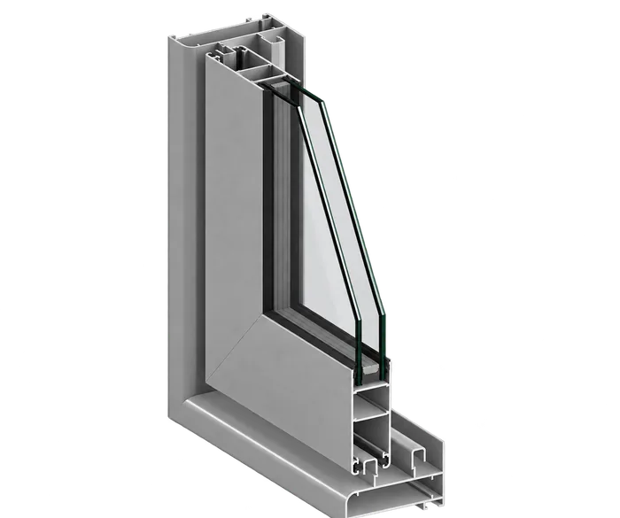
S70P
Coulissant standard
Un système résidentiel à assemblage périmétrique. Deux ou trois rails selon la configuration.
- Vitrage jusqu’à
- 21 mm
- Poids max / ouvrant
- 80 kg
PROMPOLU · Distributeur officiel STRUGAL
L’aluminium prend une autre dimension.
Onze systèmes. Un seul mouvement.
Du coulissant résidentiel aux grandes baies architecturales. Retrouvez chaque système du parcours, ses caractéristiques et sa fiche.

Coulissant standard
Un système résidentiel à assemblage périmétrique. Deux ou trois rails selon la configuration.
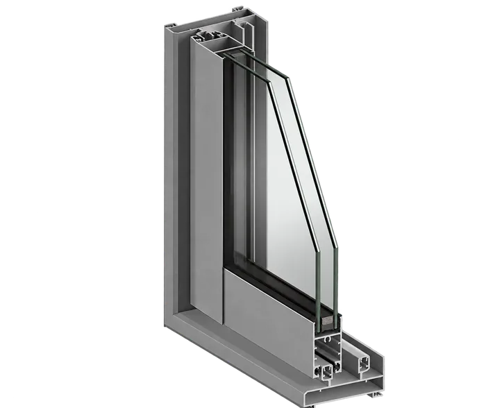
Coulissant léger
Des lignes fines, des ouvrants à coupe droite et des configurations de deux à quatre vantaux.
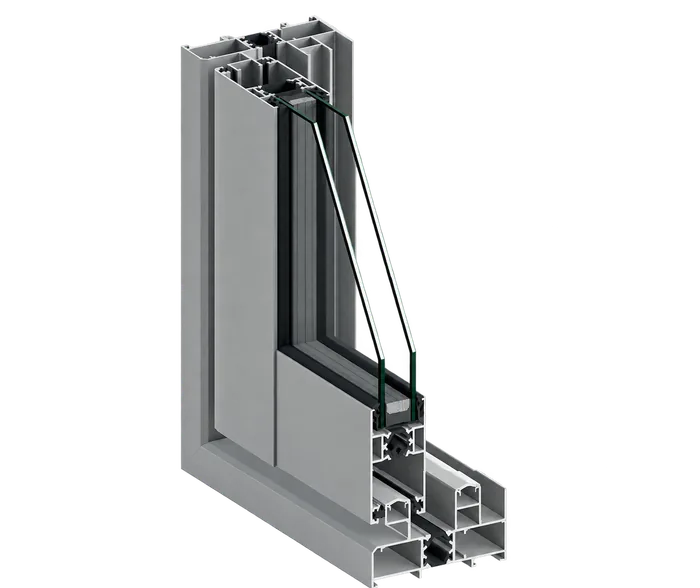
Coulissant minimaliste
Un dessin minimaliste associé à la rupture de pont thermique. Jusqu’à 2000 × 2500 mm par ouvrant.
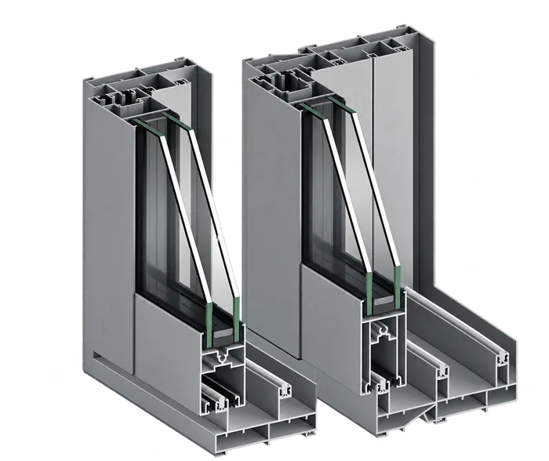
Coulissant & levage
200 kg par ouvrant en coulissant, 300 kg à levage, selon configuration.
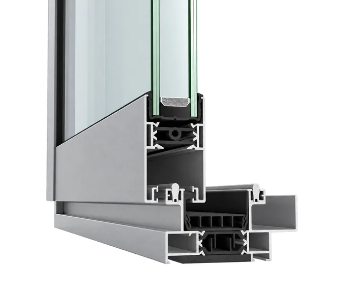
Coulissant à rupture thermique
Coulissant classique ou à levage, avec options galandage et monorail. Uw dès 1,3 W/m²K selon vitrage et configuration.
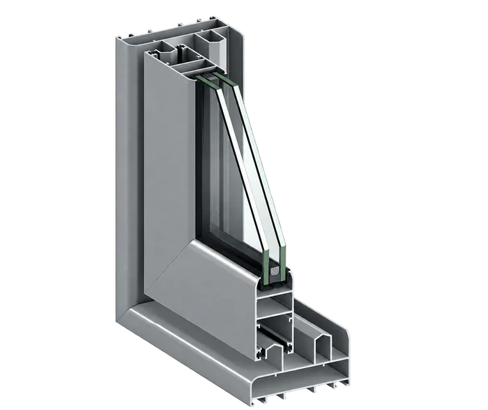
Coulissant économique
Deux ou trois rails, fermeture à mortaiser ou multipoint. Jusqu’à 2200 × 2600 mm par ouvrant.
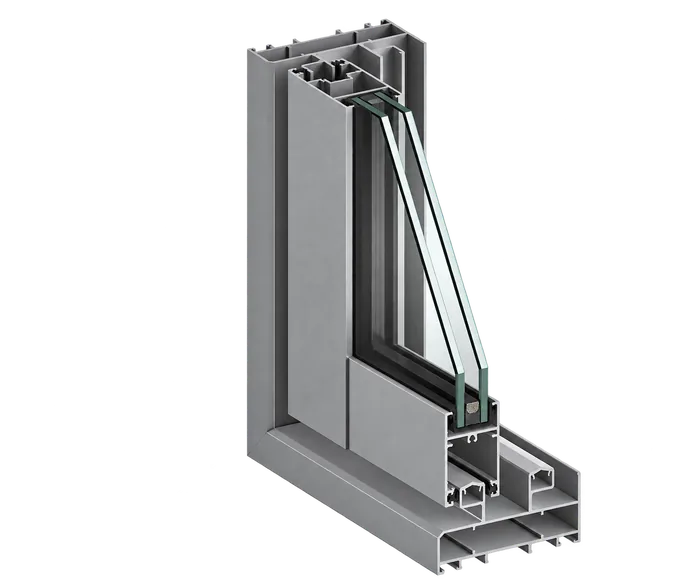
Cadre tubulaire
Un dormant tubulaire de 90 mm et des renforts possibles aux ouvrants centraux. Jusqu’à 2000 × 2500 mm par ouvrant.
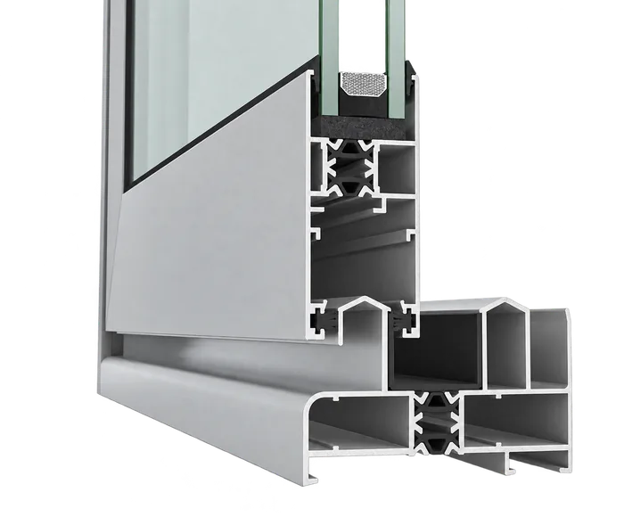
Coulissant périmétrique
Assemblage périmétrique à rupture de pont thermique, finitions laquées, anodisées ou effet bois.
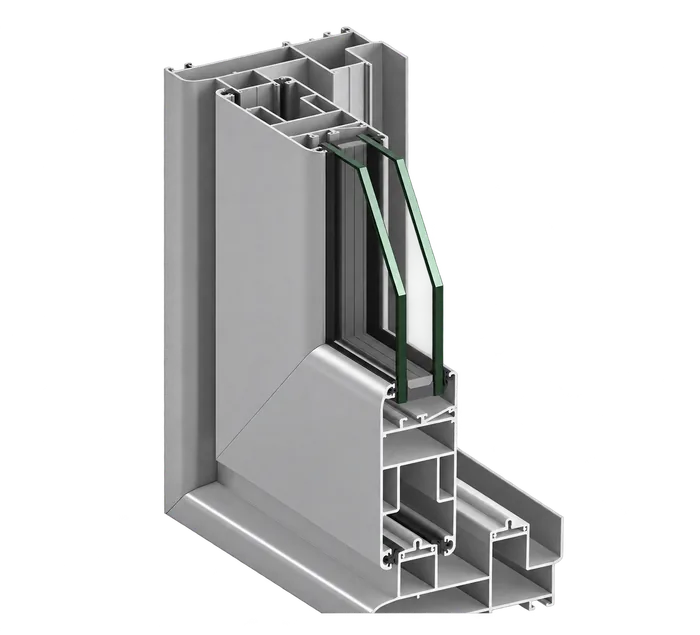
Levant-coulissant
De grandes baies à levage, jusqu’à 3200 × 3000 mm par ouvrant selon la typologie.
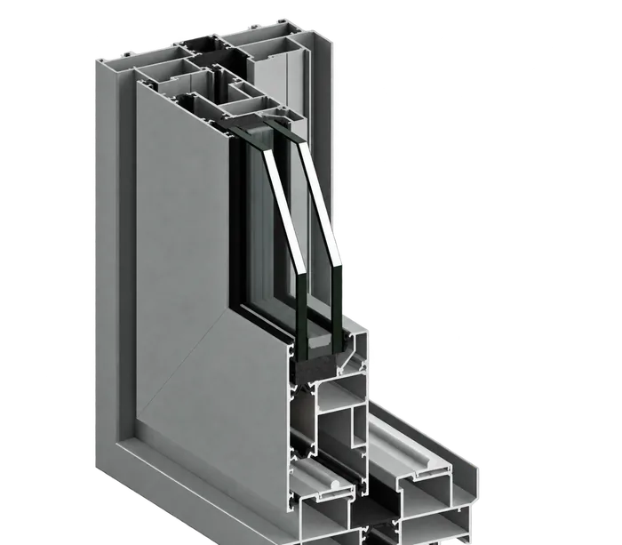
Lift & slide premium
Jusqu’à 3200 × 3000 mm et 400 kg par ouvrant avec la ferrure adaptée. Vitrage jusqu’à 40 mm.
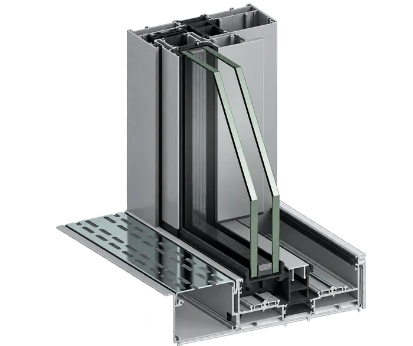
Coulissant minimaliste Infinity
Traverses horizontales d’ouvrant cachées et seuil encastré. Jusqu’à 2600 × 3200 mm, dans la limite de 7,5 m² par ouvrant.
Les valeurs maximales dépendent de la typologie, du vitrage, des dimensions et de la quincaillerie. Les vues 3D illustrent les principes et les différences entre systèmes ; elles ne constituent pas des plans de fabrication. Caractéristiques reprises des fiches présentes sur prompolu.com.
De la matière à l’ouverture
Des sections conçues pour guider le mouvement. Des joints qui assurent l’étanchéité. Des finitions qui prolongent l’architecture.